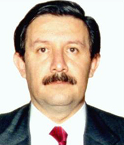

Consejero Luis María Aguilar Morales
Nació en México, Distrito Federal, el 4 de noviembre de 1949. Sus padres Luis María Aguilar y Gómez, jubilado de la Suprema Corte, y María Elena Morales Béjar.
Cursó la licenciatura en Derecho en la Universidad Nacional Autónoma de México, de 1969 a 1973; se tituló el 25 de noviembre de 1974, con la tesis Los Alcances de la Fracción XIV del Artículo 27 Constitucional para Efectos del Amparo.
1971-1975. Abogado postulante.
1978. Asesor en la Dirección Jurídica de la Universidad Nacional Autónoma de México.
1978. Asesor Jurídico en la Dirección Jurídica de la
Secretaría de la Reforma Agraria.
15 de octubre de 1968. Ingresó al Poder Judicial Federal como Taquimecanógrafo Judicial “F” en el Primer Tribunal Colegiado en Materia Civil del Primer Circuito, con el Magistrado Antonio Vázquez Contreras.
1o. de mayo de 1975 al 29 de agosto de 1975. Secretario “D” adscrito al Juzgado Primero de Distrito en Materia Administrativa en el Distrito Federal, con el Juez Genaro David Góngora Pimentel.
1o. de septiembre de 1975 al 15 de junio de 1978. Segundo Secretario del Tercer Tribunal Colegiado en Materia Administrativa del Primer Circuito, con el Magistrado Ángel Suárez Torres.
16 de junio de 1978 al 28 de febrero de 1980. Secretario de Estudio y Cuenta adscrito al Pleno de la Suprema Corte de Justicia de la Nación, con los señores Ministros Ernesto Aguilar Álvarez y Fernando Castellanos Tena.
En sesión de 12 de febrero de 1980 el Pleno de la Suprema Corte de Justicia, por unanimidad de 21 votos, lo designó Juez de Distrito interino.
1o. de marzo de 1980. Juez Segundo de Distrito en el Estado de Morelos con residencia en Cuernavaca, Morelos.
23 de septiembre de 1980. Designado Juez de Distrito propietario.
9 de marzo de 1981 al 15 de julio de 1985. Juez Quinto de Distrito en Materia Administrativa en el Distrito Federal, en sustitución de Guillermo I. Ortiz Mayagoitia.
25 de septiembre de 1984. Ratificado en el cargo de Juez de Distrito, para los efectos del artículo 97, primer párrafo, de la Constitución Política de los Estados Unidos Mexicanos.
3 de julio de 1985. Designado Magistrado de Circuito en sesión del Pleno de la Suprema Corte de Justicia de la Nación, por proposición hecha por el total de los integrantes de la Segunda (Administrativa) y Cuarta (Laboral) Salas de ese Alto Tribunal.
16 de julio de 1985. Magistrado del Tribunal Colegiado del Décimo Sexto Circuito, con residencia en la ciudad de Guanajuato, Guanajuato.
11 de abril de 1986. Magistrado del Tribunal Colegiado en Materia Administrativa del Tercer Circuito, con residencia en Guadalajara, Jalisco.
21 de enero de 1987. Magistrado del Primer Tribunal Colegiado del Segundo Circuito, con residencia en la ciudad de Toluca, Estado de México.
16 de diciembre de 1987. Magistrado del Primer Tribunal Colegiado en Materia Administrativa del Primer Circuito, con residencia en el Distrito Federal.
1o. de abril de 1995. El Presidente de la Suprema Corte de Justicia de la Nación lo nombró Coordinador General de Asesores de la Presidencia.
1o. de agosto de 1995. El Presidente de la Suprema Corte de Justicia de la Nación lo nombró Secretario General de la Presidencia y Oficial Mayor.
Coordinador e iniciador del programa de rescate del archivo histórico del Poder Judicial de la Federación, a cargo de la Suprema Corte de Justicia de la Nación.
De 1995 a 1999. Coordinador y promotor del programa de la Suprema Corte de Justicia de la Nación “Casas de la Cultura Jurídica”.
Enero de 1999. Ratificado como Secretario General de la Presidencia y Oficial Mayor de la Suprema Corte de Justicia de la Nación.
1o. de mayo de 1999. Secretario General de Comunicación y Difusión de la Suprema Corte de Justicia de la Nación.
1o. de junio de 1999. Magistrado del Primer Tribunal Colegiado en Materia Administrativa del Primer Circuito.
Candidato a Consejero de la Judicatura Federal, cuyo nombramiento correspondió a la Suprema Corte de Justicia de la Nación. Habiendo quedado en el segundo lugar dentro del concurso de oposición convocado por el Pleno del Alto Tribunal, en enero de 2003.
23 de noviembre de 2004. El Pleno de la Suprema Corte de Justicia de la Nación lo nombró Consejero de la Judicatura Federal a partir del 1o. de diciembre del mismo año.
2005 y 2006. Presidente de la Comisión de Carrera Judicial del Consejo de la Judicatura Federal.
2005 y 2006. Miembro integrante de la Comisión de Administración del Consejo de la Judicatura Federal.
2005 y 2006. Miembro integrante de la Comisión de Disciplina del Consejo de la Judicatura Federal.
Autor del estudio La Ley Orgánica del Poder Judicial de la Federación, publicado en el libro “Fortalecimiento del Estado de Derecho”, editado por la Federación Nacional de Abogados al Servicio de México (FENASEM), julio de 1996.
Autor del artículo Cuidado con las Leyes Inconstitucionales, publicado en la revista “El Mundo del Abogado”, agosto de 2004.
Coautor del libro “Estudios en Honor del Ministro Humberto Román Palacios”, coordinado por el Ministro Juventino V. Castro y Castro, Editorial Porrúa, 2005.
Colaborador del libro “Azuela vs. Azuela”.
Coautor del “Código Federal de Procedimientos Electorales, comentado”, editado por la LIX Legislatura del Senado de la República y el Tribunal Electoral del Poder Judicial de la Federación, 2006.
Autor del artículo Breve Apunte sobre la Naturaleza Jurídica de los Acuerdos del Consejo de la Judicatura Federal, publicado en la Revista del Instituto de la Judicatura Federal, número 22, 2006.
Colaborador semanal en la sección “Justicia” de la revista “Siempre!”.
Prologuista del libro “La obra pública en el Estado Méxicano”, de diversos autores, Editorial Porrúa y Universidad Panamericana.
Ha impartido diversas conferencias sobre temas relacionados con el juicio de amparo, en distintos foros tales como: la Secretaría de la Reforma Agraria, el Colegio de Secretarios de la Suprema Corte de Justicia de la Nación, la Facultad de Derecho de la Universidad Nacional Autónoma de México, la Facultad de Derecho de la Universidad de Guanajuato, la Asociación Nacional de Abogados de Empresa y la Escuela de Derecho de la Universidad Autónoma Metropolitana.
Ha impartido cátedra en cursos y escuelas, tales como: el curso sobre la “Estructura y Funcionamiento del Poder Judicial”, con el tema Tribunales Colegiados de Circuito Mixtos, en la División de Estudios Superiores de la Facultad de Derecho de la UNAM, junio de 1992.
Sinodal en exámenes profesionales en la Escuela de Derecho del Instituto Tecnológico de México (ITAM).
Expositor en el Encuentro “Diagnóstico sobre la Administración de Justicia, Análisis del Sistema de Impartición de Justicia”, celebrado en la Barra Mexicana del Colegio de Abogados, junio de 1992.
Expositor en el Seminario “Análisis de las atribuciones del Poder Judicial Federal”, realizado en la Universidad Autónoma Metropolitana, Unidad Azcapotzalco, noviembre de 1992.
Expositor del tema Garantía de Audiencia en los Actos de Clausura, organizado por la Coordinación General Jurídica del Departamento del Distrito Federal, diciembre de 1992.
Ponente en la Quinta Reunión Nacional de Magistrados de Circuito, con tres estudios cuyos títulos son: La Responsabilidad del abogado autorizado en términos del artículo 27 de la Ley de Amparo; Los efectos retroactivos que puede tener el auto del juez que concede la suspensión definitiva y La intervención de la Comisión de Derechos Humanos en los juicios de amparo en material penal.
Asesor en la elaboración del Programa de Cómputo para la Estadística de los Tribunales del Poder Judicial de la Federación.
Profesor del Curso “Los Tribunales Colegiados de Circuito”, en el Diplomado “El Poder Judicial de la Federación”, en la Universidad Iberoamericana, marzo de 1994.
Participante en el “Programa conmemorativo de los 150 años de la Instauración del Juicio de Amparo”, organizado por la Universidad Panamericana y la Suprema Corte de Justicia de la Nación, mayo de 1997.
Expositor en el Seminario “La Justicia Federal en la actualidad”, realizado por el Instituto de la Judicatura Federal y la Asociación Nacional de Magistrados de Circuito y Jueces de Distrito del Poder Judicial de la Federación, mayo de 2002.
Expositor y participante en el “Segundo Foro de Justicia y Marco Constitucional del Sistema Federal y del Distrito Federal”, convocado por el Senado de la República, habiendo participado con el tema El Estado de Derecho y las Leyes Inconstitucionales, en conferencias dictadas en el Distrito Federal y en Mérida, Yucatán.
Expositor y participante en el Foro “Reforma del Estado y el Distrito Federal”, convocado por el Senado de la República, con el tema El Acceso a la Jurisdicción del Estado y los Derechos de los Pueblos Indígenas.
Coordinador y moderador del Foro “Temas para una reforma del Sistema de Impartición de Justicia en el Estado Mexicano”, organizado por la Suprema Corte de Justicia de la Nación y el Senado de la República, durante 2004.
Coordinador del Foro “La Modernización del Sistema Penal Mexicano”, convocado por el Senado de la República, en 2004.
Coordinador del Segundo Foro “La Reforma del Estado y el Distrito Federal”, organizado por el Senado de la República, septiembre a noviembre de 2004.
Profesor en el Diplomado en “Derecho Procesal Constitucional”, organizado por la Suprema Corte de Justicia de la Nación, el Senado de la República, el Colegio de Secretarios de la Suprema Corte de Justicia de la Nación, el Instituto de Investigación Legislativa del Senado de la República y el Canal del Congreso, septiembre de 2004.
Conferencista invitado a la Reunión Nacional de Magistrados 2004, del Tribunal Superior Agrario, realizado en la ciudad del Puebla, Puebla, el 12 de octubre de 2004.
Orador oficial de la Ceremonia Anual de Celebración del Día del Servidor Público del Poder Judicial de la Federación, con entrega del Premio “Silvestre Moreno Cora”, en marzo de 2005.
Conferencista en el Festejo del “10 Aniversario del Consejo de la Judicatura Federal”, febrero de 2005.
Conferencia con motivo de la Semana Jurídica “La Suprema Corte de Justicia de la Nación a 10 años de su reestructuración”, celebrada en las Casas de la Cultura Jurídica en Colima, Colima; Guadalajara, Jalisco; Mérida, Yucatán; Morelia, Michoacán y Tlaxcala, Tlaxcala.
Orador en la ceremonia de inauguración de la nueva sede del Instituto de la Judicatura Federal, abril de 2005.
Orador en la ceremonia de conmemoración del 125 aniversario de la fundación del Juzgado Primero de Distrito en la Paz, Baja California, mayo de 2005.
Orador en la ceremonia de entrega de la distinción al mérito judicial “Ignacio L. Vallarta, 2004”, agosto de 2005.
Discurso inaugural del Coloquio Nacional denominado “La Administración de los Poderes Judiciales a partir de la Reforma Constitucional de 1994”, organizado por la Suprema Corte de Justicia de la Nación y el Tribunal Superior de Justicia del Estado de México, realizado en Toluca, Estado de México, agosto de 2005.
Orador oficial en la ceremonia de toma de protesta de Magistrados de Circuito, en sesión conjunta de los Plenos de la Suprema Corte de Justicia de la Nación y del Consejo de la Judicatura Federal, agosto de 2005.
Participante y coordinador en el Foro de Reflexión “Reforma Judicial: Colegiación Obligatoria y Defensoría Pública”, organizado por la Suprema Corte de Justicia de la Nación, septiembre de 2005.
Ponente en el “Noveno Encuentro de Consejos Mexicanos de la Judicatura”, organizado por el Tribunal Superior de Justicia del Distrito Federal, octubre de 2005.
Miembro del Comité Técnico para la elaboración de los exámenes del “Primer Concurso Interno de Oposición para la Designación de Jueces de Distrito Especializados en Materia Penal y en Materia Administrativa, así como para la designación de Jueces de Distrito de Competencia Mixta”, 2006.
Presidente del Jurado Calificador en el “Primer Concurso Interno de Oposición para la Designación de Jueces de Distrito Especializados en Materia Penal y en Materia Administrativa, así como para la designación de Jueces de Distrito de Competencia Mixta”, 2006.
Presidente del Jurado Calificador en la segunda etapa del “Decimotercer Concurso Interno de Oposición para la designación de Magistrados de Circuito”.
Vocal del Comité Técnico Especial de Estadística e Información Geográfica.
Participante en el ciclo de conferencias “El Control Constitucional en el Sistema Judicial Mexicano”, con motivo del CXCI aniversario de la instalación del Supremo Tribunal de Justicia para la América Mexicana, marzo de 2006.
Moderador en el Seminario Judicial “Protección de los Derechos Fundamentales en los Estados Federales”, que se llevó al cabo en la Suprema Corte de Justicia de la Nación, 23 de febrero de 2007.
Presentador y comentarista del libro “Derecho Familiar”, de la autoría del Maestro Diego Zavala Pérez, en la casa de la Cultura Jurídica de la Nación en Tlaxcala, Tlaxcala.
Designado representante del Consejo de la Judicatura Federal en la “Asociación Nacional de Impartidores de Justicia”, quedando como miembro de la Directiva fundadora, 20 de abril de 2007.
Participante invitado a la ceremonia de inauguración del Foro “Creando un Consenso Nacional para la Seguridad en Línea”, 13 de junio de 2007.
Ponente en el “Primer Congreso Nacional sobre Justicia Constitucional en México”, con el tema “La Justicia Constitucional Mexicana en el Marco de los Tratados Internacionales”, celebrado en Acapulco, Guerrero, 22 de junio de 2007.
Presidente del Comité Técnico para la elaboración de los exámenes del “Concurso Interno de Oposición para la designación de Jueces de Distrito”, y presidente del jurado correspondiente al concurso interno en materia administrativa.
En diciembre de 1999, el Presidente de la Suprema Corte de Justicia de la Nación y del Consejo de la Judicatura Federal le otorgó el reconocimiento por 25 años de servicio.
El 11 de julio de 2007 fue reconocido con la distinción de la Legión de Honor Nacional al mérito jurídico “Licenciado Hilario Medina”.